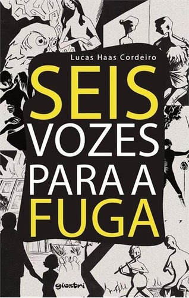
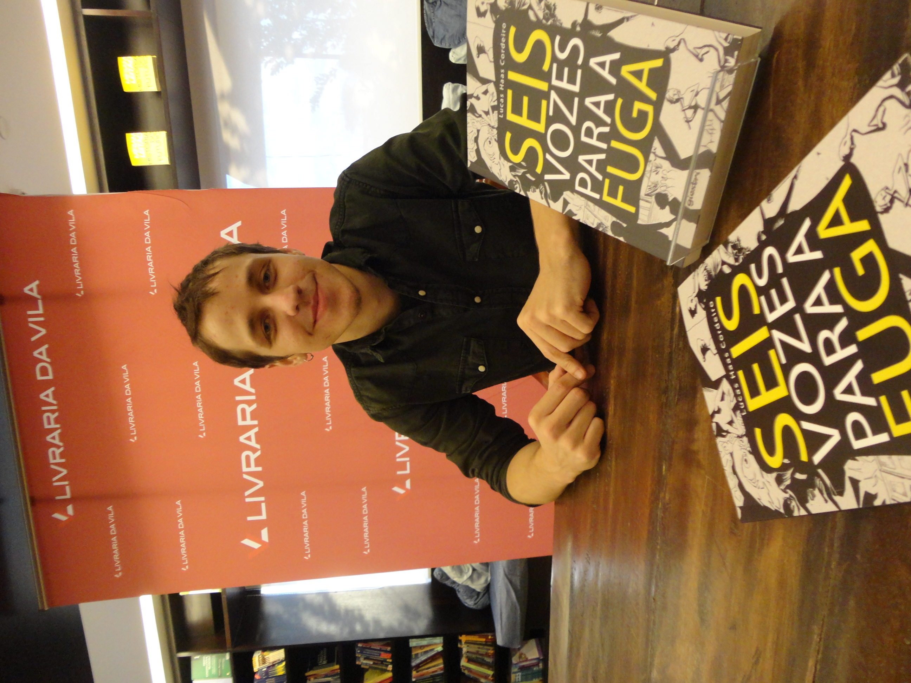

Sobre
A evidente monocronia do cenário já não esconde as diferentes nuances dos personagens. 36 vozes se entrechocam em Curitiba. Psicanalistas, prostitutas, estudantes, professores, políticos, padres e alquimistas dividem as ruas de uma cidade que camufla toda violência, onde a religião transborda como redenção impossível. Durante 21 dias, irrompem histórias de amor, reencontros e desespero. Os personagens se defrontam com a mística dos sonhos, enlouquecem, mergulham na religiosidade da experiência enteógena, dialogam com o leitor sobre os caminhos da arte e debatem a diversidade sexual como expressão identitária. A simetria dos textos orquestra as notas de uma fuga conturbada e múltipla, caracterizada pela profundidade psicológica e pelo confronto de persectivas. Seis vozes para a Fuga é um livro que se abre a incontáveis leituras, das quais o leitor por certo não sairá indiferente.

Resenha de Ernani Fritoli
doutor em Literatura Comparada pela USP
Multitextualidade: o termo não define mas caracteriza essa pequena biblioteca que é Seis vozes para a fuga. Borgiana, calviniana e pirandelliana, uma biblioteca em que os olhos leem Haas, mas nos ouvidos cochicham e sibilam, trazidas à tona de outros tempos e espaços, fantasmas de tantas vozes – Dante e Pessoa, Hugo e Balzac, Castañeda e Mann, Stoker e Trevisan, Márquez e Lispector, Pavese e Leminski, Freud e Queneau, Ungaretti e Perec... Clássicos e alternativos, assim como os performers que a cada sexto de um sexto assumem e avivam com sua morte ou imortalizam com sua vida uma das vozes que se alternam nos 36 fragmentos desse romance cuja estrutura complexa, simétrica e entrelaçada, imita a de uma fuga bachiana.
Cada breve narrativa pode ser lida per se, com uma semi-autonomia de conto. Seis vezes seis vozes se revezam variando estilos que mantêm sempre a tensão de uma prosa ora filosófica ora psicanalítica, técnica ou lírico-poética, sem jamais perder a harmonia, cada vez colorindo uma nova tessela do mosaico que formará, no multitexto, o grande desenho, ou fuga, final (final?).
Resenha de Daniel Lacerda
doutor em Estudos Literários pela UFPR
“Assim, as admoestações visam sobremodo à entrega, e não à clareza do que se pretende enunciar. Deixemos de ser barrocos”.
Extraída de um dos trinta e seis solilóquios (sub-divididos em seis grupos de seis vozes / caracteres cada um) que compõe o romance de estreia de Lucas Haas Cordeiro, o dizer em questão pode, creio, ser tomado como um anti-mote a sintetizar a obra, mais ainda do que a bela citação de Italo Calvino, que lhe serve de abertura. Mas, por que um anti-mote? Porque são precisamente as ‘admoestações’ verborrágicas que perpassam toda a obra, a qual, na verdade, nunca deixa de ser barroca. Muito pelo contrário: o espraiar-se dos solilóquios pelas suas mais de trezentas páginas, ora tergiversando acerca de questões psicanalíticas que afligem os personagens-narradores (todos os relatos são narrados em primeira pessoa), ora vagando por pontos peculiares da Curitiba natal do autor (claro influxo ‘vampiresco’ de Dalton Trevisan, mencionado, direta e indiretamente, em vários pontos das falas), ora, como no fragmento acima citado, tecendo considerações metalinguísticas acerca do próprio fazer literário, atestam claramente sua verve barroquista – o barroco, pérola irregular, no dizer de Severo Sarduy, que caracteriza-se precisamente pela
E o narrar barroquista de Lucas acha-se pautado pela forma musical da fuga, já explicitada em seu título. Tal processo composicional, que tem na obra de Johan Sebastian Bach seu arauto maior, é, aqui, traduzido intersemioticamente para o código verbal, determinando seu teor polifônico, segundo o qual um motivo dominante é inicialmente exposto e, posteriormente, desenvolvido por diversas vozes contrapontísticas. Em Seis Vozes Para a Fuga, o motivo introdutório é um certo ritual ayahuasca, no qual tomaram parte, no réveillon de 2012, todos os trinta e seis actantes dos relatos, os primeiros dos quais começam por descrever suas ‘mirações’, seus envolvimentos sensoriais ali experimentados. A partir de então, os depoimentos contrapõem-se, expandindo-se semântica e sintaticamente.
Aos olhos e ouvidos do leitor e ouvinte antenado com as experimentações da prosa contemporânea, talvez o fator mais sedutor da(s) narrativa(s) seja exatamente esta sua polifonia, que lhe dá um tom de inacabamento, de abertura composicional, o qual, tomado de empréstimo da fuga musical (e, é preciso que se diga, desenvolvido de forma personalíssima, incomum para um romance de estreia de um autor tão jovem como Lucas), rompe com a narrativa-contadora-de-estória da tradição do romance ocidental, para alçar o que poderíamos metaforicamente chamar de um vôo cego anti-narrativo, a permear, por exemplo, entre nós, a escritura de um Antonio Geraldo Figueiredo Ferreira, cujo romance também inaugural, intitulado As Visitas que Hoje Estamos, guarda, por seu teor polifônico-contrapontístico, pontos em comum com as vozes em fuga de Lucas Haas Cordeiro.
Pois que as ‘admoestações’ verbais destas vozes venham a se desdobrar barroquisticamente em outras invenções, levando a lavra do autor a outros võos tão cegos e, precisamente por sua ‘cegueira’ às demandas da prosa convencional, tão ousados como os deste volume que, por sua ousadia escritural, tão favoravelmente surpreende.
Resenha de Paulo Urban
doutor em Estudos Literários pela UFPR
Seis Vozes para a Fuga é a mais nova obra literária do brilhante escritor curitibano, também poeta, Lucas Haas Cordeiro, 26 anos, leonino de nascimento, ascendente em Aquário. Do autor li seu primeiro livro, Sussurro & Codeína, 2006, uma estreia já madura, e li ainda ano passado nas agradáveis tardes de outono em que, lapiseira em mão, passei no Embu das Artes, lendo e meditando seus versos, outros poemas seus inéditos, que me impressionaram dado à densa verve que os perpassa, associada à profundidade dos temas, sempre estranhos e incomuns, sobre os quais Lucas Haas escolhe 'poetar', e que nos põem
onde vivemos para adentrar no sinistro Hades que nos espera, a partir do que, viajando por áreas míticas interditas, quem sabe um dia, ascendidos deste abismo de nós mesmos, possamos migrar redimidos ao centro mandálico do Idílico Conclave dos anjos e arcanjos que nos assistem - e nos confortam - em nossas humanas agruras, cáusticas e aflitas.
Seis Vozes para a Fuga, a mais recente produção deste escritor nada romântico, senão fantástico, é para ser lida com escuta aberta e senestésica. Só que agora, em vez daquele misterioso Cielo a que sua portentosa poesia dava voz, Lucas Haas, mestre e maestro, rege um fabuloso coro de 36 vozes que se enredam e se (des)equilibram numa harmonia esquadrinhada em seis diferentes tonalidades vocais, repleta de acordes impactantes e dissonâncias expectantes que se resolvem num texto arrebatador de hiperventilado fôlego literário. Lucas Haas é ainda tradutor e revisor de textos (adoro esta combinação) e, mais que tudo, é arte uraniana em prosa avançada, impredictable e incomum, um dos arautos ele próprio desses novos tempos de escrita holográfica que se anunciam nesta nova Era do Aquarismo. Está dado o recado.
